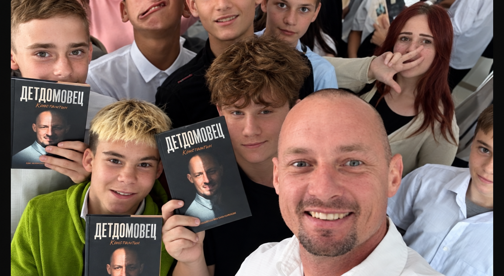

Проекты и встречи
Передавать
свет дальше.
Личная история продолжается там, где появляется встреча, разговор и возможность поддержать другого человека.
Узнать о направлении

Продолжение пути
История становится
действием.
Константин прожил часть детства в детском доме Севастополя. Уже взрослым он вернулся к детям как наставник и волонтёр. Поэтому книга — не только рассказ о прошлом, но и часть сегодняшней миссии.
Покупая один экземпляр книги «Детдомовец. Свет внутри», ты помогаешь передать ещё два детям в детские дома, приюты и интернаты.
О книге · 1 000 ₽